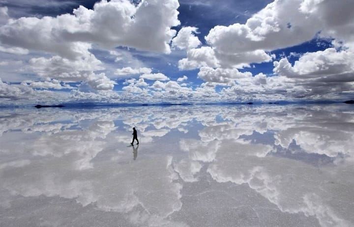
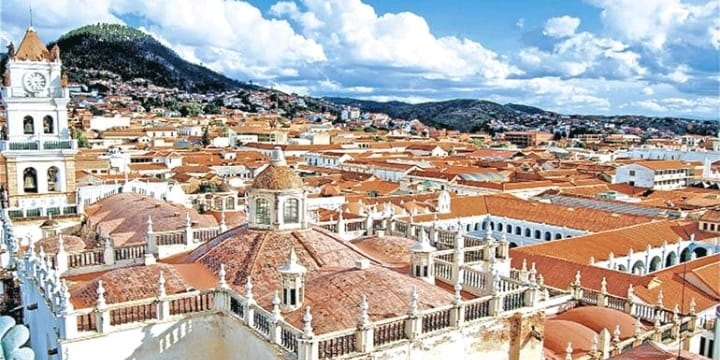
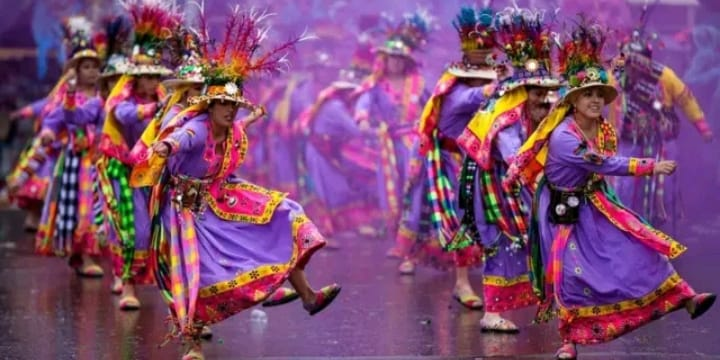
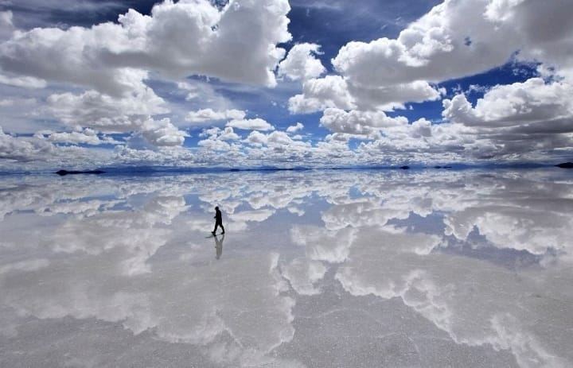
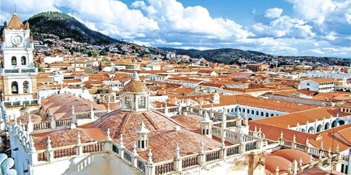
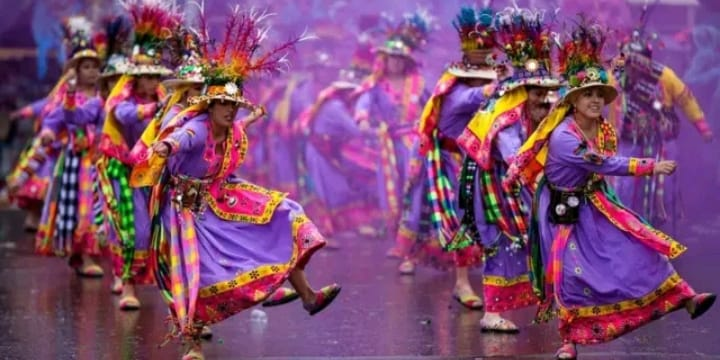

MONTAÑAS Y VALLES ANDINOS
Bolivia es conocida por su increíble diversidad geográfica. Desde las alturas majestuosas de los Andes hasta los valles fértiles, el país ofrece paisajes espectaculares que fascinan a cualquier visitante. El altiplano es hogar del Salar de Uyuni, el mayor desierto de sal del mundo, y La Paz, la sede de gobierno más alta del planeta
CULTURA MILENARIA
Bolivia es un crisol de culturas, con más de 36 grupos indígenas que han mantenido vivas sus tradiciones ancestrales. Ciudades como Sucre y Potosí están llenas de historia, con arquitectura colonial que narra el pasado colonial del país. Además, el Carnaval de Oruro, una festividad declarada Patrimonio Cultural de la Humanidad por la UNESCO, es una muestra vibrante de la riqueza cultural boliviana.